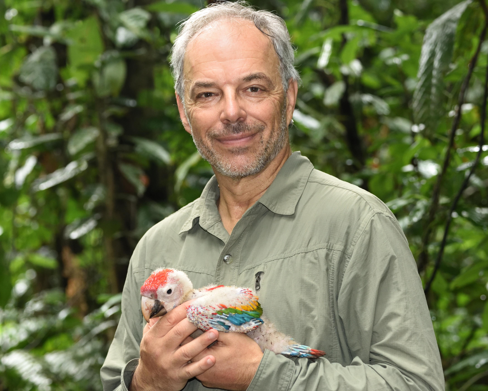

Dr. Carl Safina
Endowed Professor for Nature and Humanity, School of Marine and Atmospheric Sciences
Dr. Carl Safina, founder of the Safina Center, is the first Endowed Professor for Nature and Humanity at SOMAS. He studied seabirds for his PhD and has worked to change fishing policies to benefit marine wildlife through science communication. An award-winning author, he writes about the relationship between humans and the natural world.
Can you tell us about your career journey? How did you decide to pursue a career in marine ecology, and what made you decide to become an environmental writer?
I always loved animals and the natural world. So it's a life journey, not just a career journey. I always had pets, went birding, camping, fishing, and learned bird-banding, and so on. In college, I majored in environmental science. There I met professors involved in bird work, and I got temporary jobs re-introducing peregrine falcons and studying seabirds called terns. After that, I got a job with the New Jersey Dept of Environmental Protection finding illegal toxic chemical dumps, and a year later—through connections I made volunteering—got a job with the National Audubon Society. I studied terns for the next ten years and got a master's and PhD doing that. Because I was on the water a lot with the terns, and fishing a lot, I could see that fish were being depleted by overfishing. So I switched my work and focused on changing federal fisheries law and also working internationally to protect bluefin tuna and sharks. We succeeded in getting fishing quotas reduced and in writing and getting through Congress the Sustainable Fisheries Act of 1996. The follow-through with that was writing my first book, Song for the Blue Ocean, and I've been writing books and articles and speaking ever since. Now I also teach.
Throughout your work, you have achieved real-world policy changes. Can you tell us about your journey through that?
I was very far from confident. But the goals were very precisely articulated and the campaigns very targeted. When I was motivated to involve myself I had no idea what to do. How does one end overfishing? But I was very proactive and realized that I had a surprising hidden talent for networking and organizing. I also realized that policy is not mainly science; it's people, it's law, it's very much politics. My main ability turned out to be writing, and I wrote articles about how fisheries policies were failing and how to fix the laws. I linked up with environmental lawyers who knew how to get things into Congress.
How did you develop your ability to communicate science effectively?
Practice. Learning by doing. Doing a lot of it. Networking with people who knew things I did not know about how to get things done. Working with them. Learning how to get grants from foundations for conservation policy work.
What about your work motivates you despite facing challenging situations?
My love and concern for the natural world and other species, for wild things and wild places, is the central driver of my life. I am good about balancing work and enjoyment of wild things. The writer E. B. White said, "I arise in the morning torn between a desire to save the world and a desire to savor the world. This makes it hard to plan the day." That pretty much sums it up for me.
For graduate students who don't feel the need to develop communication skills outside their discipline, what would you encourage them to reconsider?
Well, there is an overwhelming need. Silence is the same as complicity. The biggest threat to anything is the people who say nothing. That's how bad people win. With science and reason and democracy under assault from within, this is not a time to be silent. Your own work won't be anything when all the science funding is cut.
What advice would you give to those balancing science communication with academic work?
No one can do everything. Everyone can do something. Do something.
Any advice for those starting their research careers in this political moment?
Keep working. But don't ignore what's happening. Use your voice. And be patient, because the worst people always topple.
Has anyone served as a role model in your life?
Aldo Leopold, Rachel Carson, Peter Matthiessen, Barry Lopez.
What are the "coolest" places you've visited for research?
What comes to mind right away are Laysan Island and Palau. But I have been so fortunate to have visited every continent from the Arctic to Antarctic and across the tropics. My life has turned out much better and more interesting than I ever thought possible. When I was in college, I wasn't sure I'd ever get to go anywhere or do anything that mattered. I am glad I was wrong about myself.
Learn more: carlsafina.org | Faculty Profile